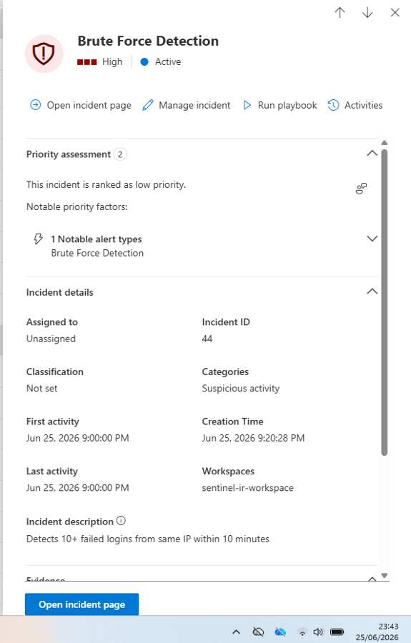
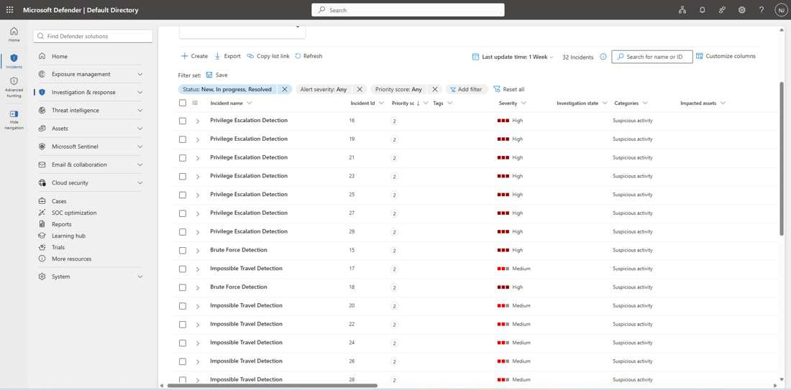
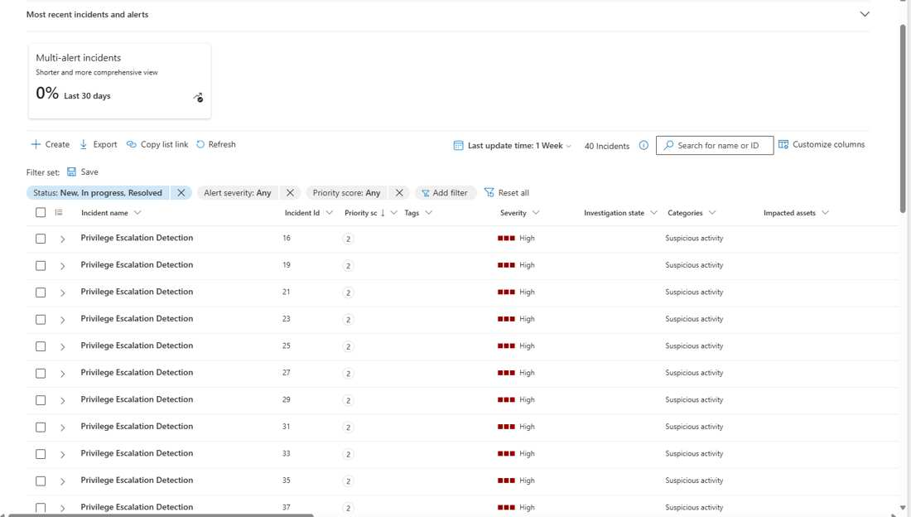

Security automation • Microsoft Azure • 2026
Azure Sentinel Automated Incident Response Pipeline
Built a lab pipeline using a Python log simulator, Azure Log Analytics, custom KQL analytics rules and a Logic Apps playbook for automated triage.
- Created detection logic for brute-force login attempts, impossible travel and privilege escalation.
- Triaged 40+ simulated incidents through the pipeline.
- Enriched alerts with AbuseIPDB threat intelligence and documented the architecture and workflow.
Selected evidence from the Microsoft Sentinel lab investigation.



Technical notes • KQL examples
Sample detection logic
Transparency: These are illustrative KQL examples added for learning and portfolio demonstration. They were not recovered from the expired Sentinel workspace and have not been re-tested in that workspace. Table schemas, field availability and activity names can vary by tenant; validate and tune before operational use.
1. Brute-force sign-in pattern
Counts failed sign-ins from the same IP address in 10-minute windows and surfaces windows with at least 10 failures.
SigninLogs | where TimeGenerated > ago(24h) | where ResultType != "0" | summarize FailedAttempts = count(), TargetAccounts = dcount(UserPrincipalName), Accounts = make_set(UserPrincipalName, 20) by IPAddress, bin(TimeGenerated, 10m) | where FailedAttempts >= 10 | order by FailedAttempts desc2. Unusual location changes (triage heuristic)
Highlights accounts seen signing in from more than one reported location within a one-hour window. This is a review signal, not proof of impossible travel; distance, elapsed time, VPNs and trusted network context must be assessed.
SigninLogs | where TimeGenerated > ago(24h) | where ResultType == "0" | summarize Locations = make_set(Location), IPAddresses = make_set(IPAddress), SignInCount = count() by UserPrincipalName, bin(TimeGenerated, 1h) | where array_length(Locations) > 1 | project TimeGenerated, UserPrincipalName, Locations, IPAddresses, SignInCount | order by TimeGenerated desc3. Directory role-change activity
Surfaces selected role-membership audit events for analyst review. Exact activity names and the relevant audit schema should be checked against the tenant.
AuditLogs | where TimeGenerated > ago(7d) | where ActivityDisplayName has_any ( "Add member to role", "Add eligible member to role", "Add member to directory role" ) | project TimeGenerated, ActivityDisplayName, Result, InitiatedBy, TargetResources | order by TimeGenerated desc